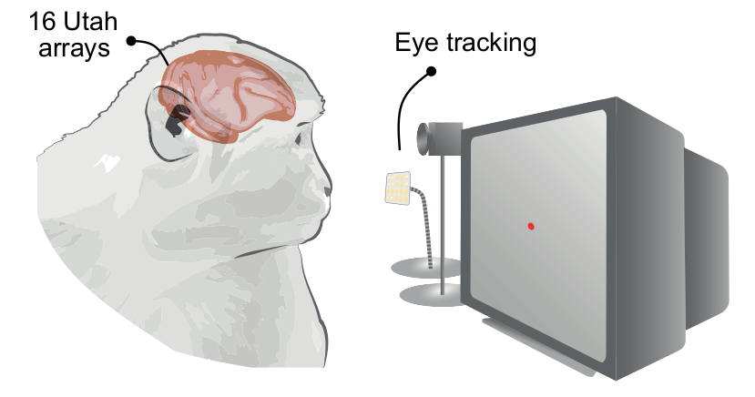
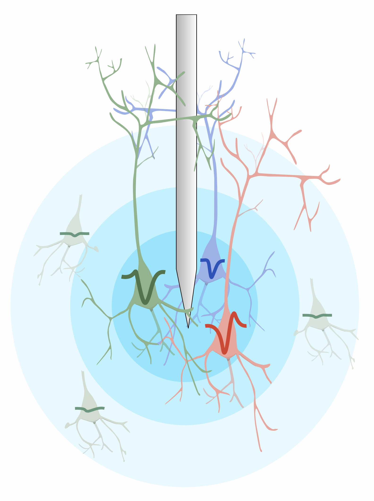
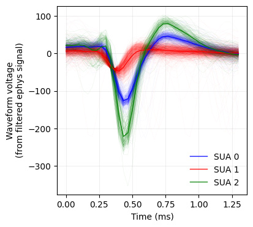
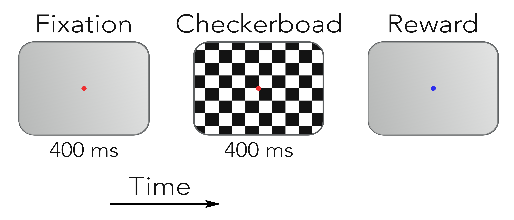
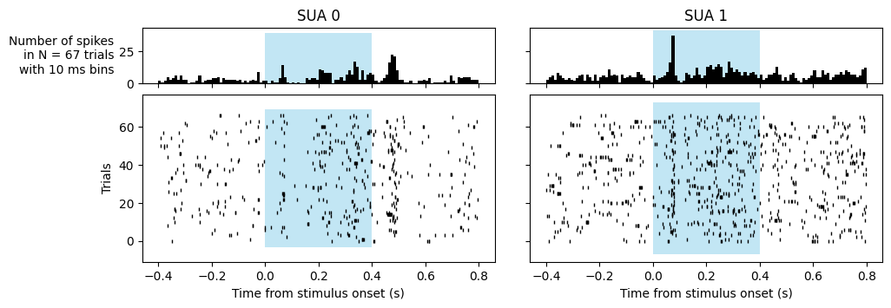
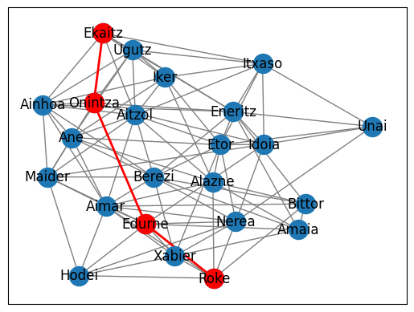

Open teaching materials
Practical exercises for introductory computational neuroscience, freely available under a BSD-3 license.

Power spectrum (FFT, Welch), spectrogram, brain state estimation from alpha power, wavelet transform


Signal filtering, threshold detection, waveform extraction, K-means clustering, ISI distributions


Peri-stimulus rasters, time binning, signal-to-noise ratio, trial-to-trial variability (Fano factor)

Adjacency matrices, clustering coefficients, shortest paths, degree distributions, marmoset connectome, Watts-Strogatz model
All notebooks available on GitHub. Solutions available to teachers on request — email me.
Teaching experience
Charles University, Prague
MSc: Introduction to Computational Neuroscience (2024–2025)
Lectures and practica on neural data analysis. Preparation and supervision of final research projects.
Advanced Scientific Programming in Python (ASPP)
ASPP is a week-long summer school for scientists who program, running since 2009 across Europe and beyond. It covers advanced programming techniques and best practices tailored to scientific research, including version control, testing, debugging, parallel programming, and software design. Around 30 participants are selected each year from over 150 applicants. The school is free of charge.
My involvement:
Organizer — Bilbao 2022, Prague 2026
Teacher — Heraklion 2023, Heraklion 2024, Plovdiv 2025, Mexico city 2026, Prague 2026
Topics taught: Version control with Git, High Performance Python (time and memory profiling, Numba, Cython), and Parallel Python (multi-threading & multi-processing).
University of Cologne
BSc: Bioinformatics (2023)
Created and hosted NEST-Desktop practica.
MSc: Computational Neuroscience module (2021–2023)
6 lectures on single neuron modeling, spiking network simulation, and graph theory.
MSc: Simulation and Modeling (2024)
Created and supervised project on single neuron simulations (AdEx model).